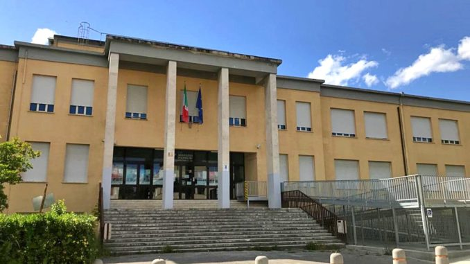
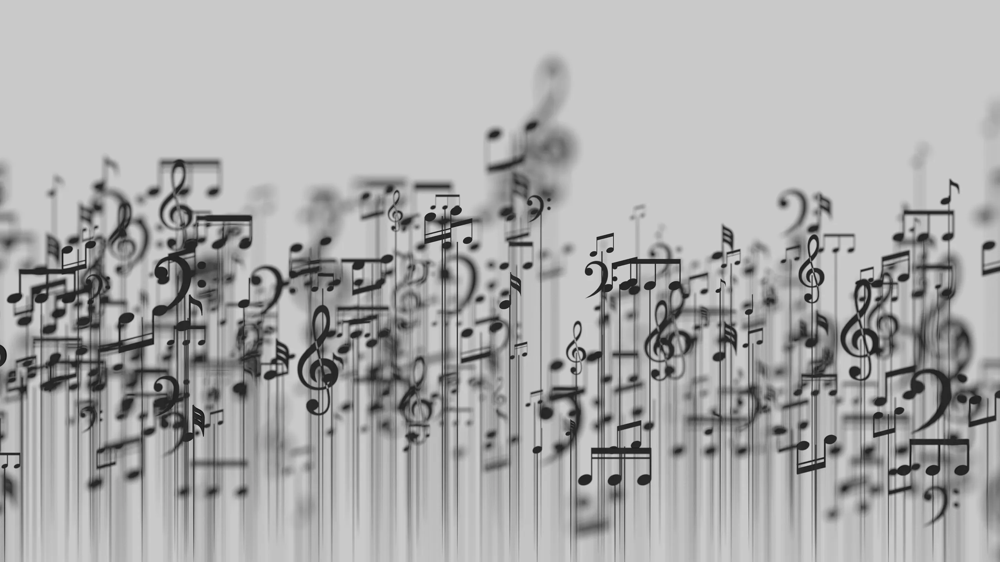

Tra lezioni, idee e progetti, in questi cinque anni ho costruito qualcosa che racconta chi sono.
Ho 20 anni e vivo a Jesi, in provincia di Ancona. Sono una persona creativa e curiosa, con una grande passione per la tecnologia e tutto ciò che permette di creare qualcosa di nuovo. Mi piace mettermi alla prova, imparare continuamente e affrontare ogni esperienza come un’occasione per crescere. In questi anni di scuola ho costruito competenze, amicizie e ricordi che porterò con me nel futuro. Credo molto nell’impegno, nella curiosità e nel valore delle persone che mi stanno accanto ogni giorno, perché sono proprio loro a dare significato ai miei obiettivi e ai miei progetti.
Dopo aver frequentato la scuola primaria e media a Jesi, ho scelto di proseguire il mio percorso all’IIS “Marconi Pieralisi”, un istituto che mi ha permesso di avvicinarmi in modo concreto al mondo della tecnologia. Nel corso degli anni ho studiato materie come programmazione, sistemi e reti, database e sviluppo software, acquisendo competenze tecniche ma anche un metodo di lavoro più organizzato.
Oggi non ho ancora preso una decisione definitiva sul percorso che seguirò dopo il diploma, ma sto vivendo un momento di riflessione. Nel tempo è nato in me un interesse inaspettato per l’ambito dell’architettura e della progettazione, che non avevo mai considerato prima in modo così concreto. Grazie alla materia di Tecnologie e Disegno, affrontata durante il secondo anno: grazie a essa ho iniziato a sviluppare un nuovo modo di osservare gli spazi, le forme e le idee progettuali, avvicinandomi gradualmente a un settore che oggi mi affascina sempre di più. Da quella esperienza è nata una passione che si è rafforzata con il tempo, influenzando il mio modo di pensare al futuro.

Fuori dalla scuola ci sono alcune passioni che occupano una parte importante delle mie giornate e che mi rappresentano molto più di un semplice hobby.

La musica è probabilmente la cosa più importante del mio tempo libero. Ascolto musica ogni giorno, praticamente in qualsiasi momento: mentre studio, quando sono in viaggio o semplicemente quando ho bisogno di stare tranquilla. Per me non è solo un passatempo, ma qualcosa che riesce davvero a influenzare il mio umore. Nei momenti in cui mi sento sola o un po’ giù, la musica è spesso la prima cosa che mi aiuta a stare meglio. Mi piace ascoltare generi diversi, dal rock alla musica elettronica.
La tecnologia è una delle passioni che mi incuriosisce di più, soprattutto nella parte creativa e grafica. Mi piace immaginare e creare progetti personali, ad esempio pensare alla grafica di un videogioco oppure progettare piccoli giochi online. Trovo interessante tutto ciò che riguarda il design digitale, le interfacce e il modo in cui un’idea può trasformarsi in qualcosa di concreto sullo schermo. Oltre a questo, mi piace scoprire nuovi programmi.
Mi piace molto viaggiare e visitare posti nuovi ogni volta che ne ho la possibilità. Anche un viaggio breve riesce sempre a lasciarmi qualcosa di positivo, perché permette di uscire dalla routine quotidiana e vedere ambienti diversi dal solito. Viaggiare mi fa sentire più libera, mi aiuta a conoscere nuove culture e a capire quanto il mondo sia diverso da quello che viviamo ogni giorno. I viaggi più belli rimangono quelli fatti in condivisione.